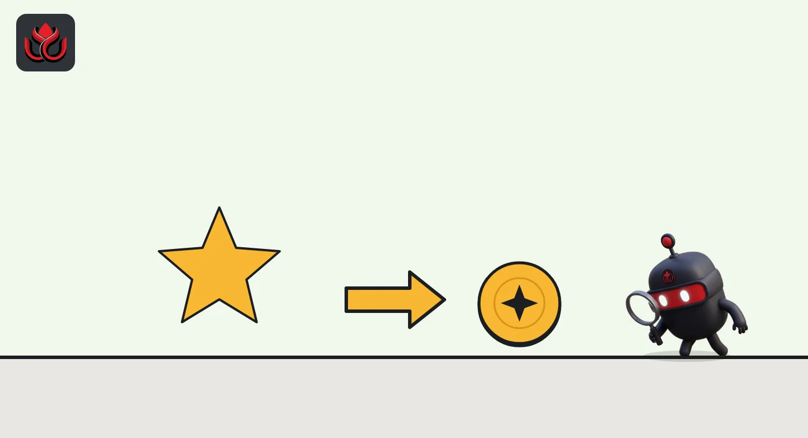
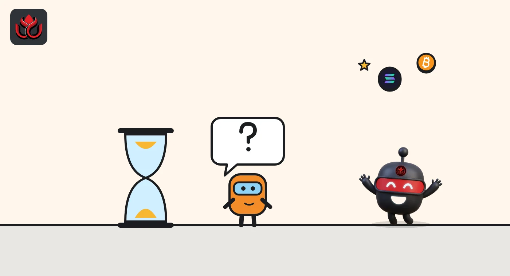

What are points programs in crypto? How they work and why points are not tokens
A points program scores what users do on a crypto product, such as deposits, trades or referrals, and usually hints that points will later become tokens. Points are not tokens: the project decides if, when and how they convert.
Key points
- Points are an offchain score a project gives for activity like deposits, trading volume or referrals.
- Most programs suggest points will convert into a future token airdrop, but the rate and the rules are set by the project, often at the end.
- Points cannot usually be sold or transferred, and a project can change, cut or cancel them.
- Your real costs are fees, locked capital and the risk of the protocol itself.
What is a crypto points program?
A points program is a scoreboard. A crypto project, often one that has not launched a token yet, gives users points for actions it wants: depositing funds, trading, providing liquidity, holding a position for a long time or bringing friends. Points sit in the project's own database, not on a blockchain, so they are not tokens and usually cannot be sold or moved.
The appeal is the implied promise. Most programs signal that points will later count toward a token airdrop, a free distribution of tokens to users. That is why many users treat points as an early, unofficial claim on a future token. They are not a legal claim on anything.
How do points turn into tokens?
At the token generation event (TGE), the moment a token is created, the project sets aside part of the supply for users and converts points into token allocations. CoinMarketCap describes this kind of reward as a retroactive distribution: past users get tokens based on earlier activity.
Sophon's documentation shows the flow. Its farming program first accepted deposits on Ethereum and awarded Sophon Points. After its mainnet launched in December 2024, the program's points informed the published SOPH reward allocations. The program ended on June 30, 2025, and its FAQ says no new deposits, locks, boosts or points are available.
The size of the user bucket varies widely. Tokenomist's breakdown of Hyperliquid's HYPE shows a Genesis Distribution of 31% of the 1 billion supply, plus 38.89% set aside for future emissions and community rewards, as of November 2, 2026.
HYPE allocation by category
% of 1 billion HYPE
Source: Tokenomist, Hyperliquid (HYPE), checked November 2, 2026. HIP-2 Hyperliquidity (0.01%) not shown.

Why do crypto projects run points programs?
Points let a project grow before it has a token. They pull in deposits and trading volume, which make the product look busy and liquid. They also let the team delay the hard choices: how big the airdrop is, who qualifies and how much each action is worth.
That flexibility is the catch for users. Because points are not tokens, the team can change the formula, add filters against fake accounts (Sybils) or reduce the payout. Some projects end with no token at all. LC Insight reported how StandX canceled its token and paid a one-time DUSD airdrop of undisclosed size instead.
How do points programs work in practice?
Most programs share a few mechanics:
- Seasons. Points are counted in rounds with start and end dates. A season can end with a snapshot that feeds an airdrop.
- Multipliers and boosts. Some actions or lockups earn more points per dollar.
- Referrals. Users earn a share of points from people they invite.
- Leaderboards. Public rankings show who has the most points, without saying what they are worth.
- Filters. Before converting, projects often screen out wash trading (trading with yourself to inflate volume) and fake accounts.
Some programs pay in an existing token instead of points. Meteora, for example, paid liquidity providers in MET in seasonal rounds, LC Insight reported.

Can a points program exist after a token launches?
Yes. Points are not only a pre-token tool. Some projects use them to hand out an existing token over time. Lisk is one example: its LSK token FAQ says LSK is becoming Lisk's loyalty token, earned by businesses that run money operations on Lisk and refer others. In a phased rollout, points-style rewards are among the things that will become redeemable in LSK as the product matures. The order is set, but dates follow product releases.
Either way, the tokens behind a points program come from somewhere. CoinMarketCap's supply rules generally leave ecosystem and marketing reserves, including tokens set aside for airdrops, out of circulating supply until there is evidence they are being used. When those tokens are paid out, circulating supply grows, and Tokenomist counts airdrops among the sources of dilution for existing holders.
Points programs can also outlive the product. Sophon ended its farm on June 30, 2025, and its FAQ now says a wind-down does not change the original position terms, and points users to claim.sophon.com to withdraw remaining balances.
What are the risks of farming points?
- No guaranteed value. As MetaMask notes about airdrops in general, the value of what you receive is never guaranteed.
- Protocol risk. Deposits sit in smart contracts or on a young exchange that can be hacked, paused or shut down.
- Locked capital. Lockups and slow withdrawals tie up money that could be used elsewhere.
- Fees and losses. Trading to earn points costs fees, and leveraged trading can cost far more.
- Dilution. If many users farm, each point is worth a smaller share of the pool.
- Scams. Fake points dashboards and claim sites copy real programs to steal funds.
How can you read a points program before joining?
Look for written rules. Does the project publish how points are earned, when seasons end and what share of token supply goes to users? Is there a stated conversion date, or only hints? Check who runs the product, whether its contracts were audited and how withdrawals work.
Then compare the cost with the unknown reward. If the only reason to use a product is points, the trade is a bet on a future token whose size, price and rules you cannot see yet.
It also helps to know what a generous outcome looks like. Tokenomist's breakdown shows HYPE set aside 31% of its supply as a Genesis Distribution, a large share by any measure, while many projects reserve far less for users or do not publish the figure until launch. Ask, too, how the project will treat fake accounts. Anti-Sybil filters are applied at the end, and the rules for what counts as abnormal activity are usually the project's call. Finally, read how the program ends: whether there is a snapshot date, whether the reward vests after the claim and how long the claim window stays open.
LC Insight analysis
This section is our reading of the facts above, not a statement of fact.
- Read points as a marketing budget of unknown size. The project gets deposits and volume now and decides later how much to give back, so users carry the uncertainty.
- The number to look for is the share of supply set aside for users. A big bucket like HYPE's 31% Genesis Distribution is the exception, and many programs never publish the figure before launch.
- Programs that reward raw trading volume invite wash trading. Expect stricter filters after the fact, which can shrink allocations for honest users too.
What's next
- Projects publishing conversion rules before their token launch
- Changes to points formulas mid-season
- Points programs that end with no token
Frequently asked questions
Are crypto points worth money?
Not directly. Points are a score in the project's database. They only gain value if the project converts them into a token or other reward, on terms it sets.
Can I sell or transfer points?
Usually not. Points are offchain and tied to your account or wallet, and the project's own rules decide what happens to them.
Do all points programs end in an airdrop?
No. Projects can change the formula, delay the token or cancel it. StandX, for example, dropped its token and paid users in DUSD instead.
What is a points season?
A season is a counting period with a start and end date. When it ends, the project may take a snapshot of balances for a reward or start a new season.
Disclaimer. This article is based on public information and the sources listed below as of the update time shown. It is for information only and is not investment, legal or tax advice. Figures may change as companies and authorities publish new data.